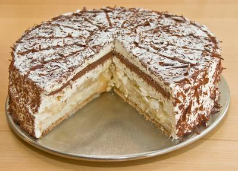
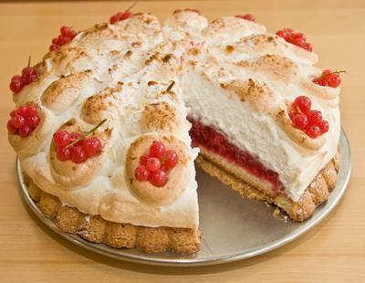
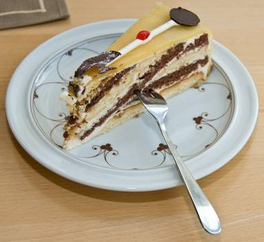
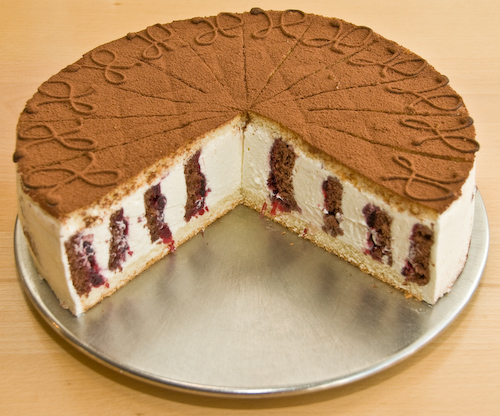
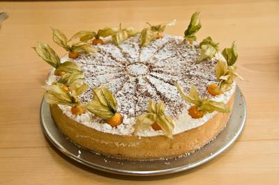
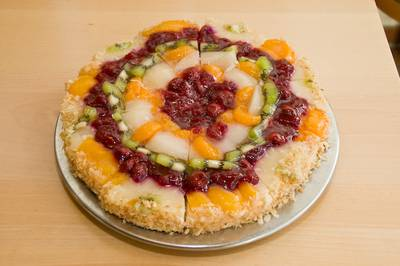

Bei uns wählen Sie aus einer Vielzahl an Kuchen und Torten, die nach eigenen Rezepten mit langer, familiärer Tradition liebevoll hergestellt werden. Lassen Sie sich von den Bildern verführen …





